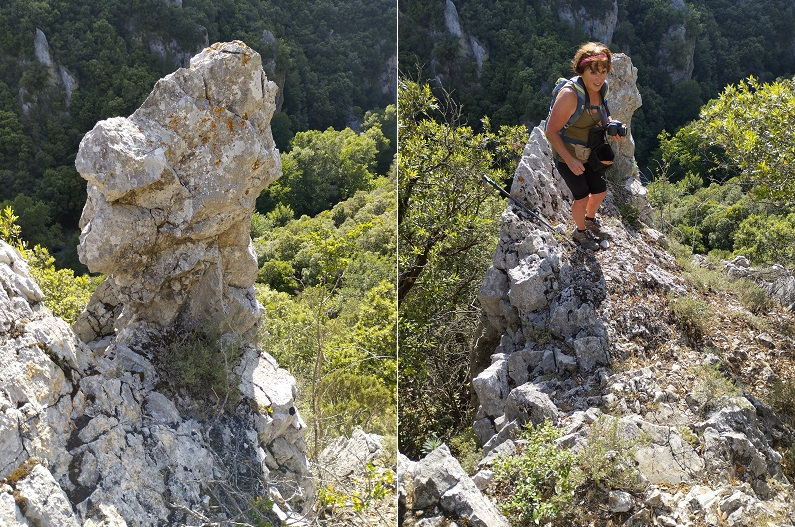

Le sentier rose de la rive droite de l'Aude longe à mi-hauteur les gorges de la Pierre-Lys.
Je ne vous indiquerai pas le point de départ de ce sentier tout simplement parce que je ne le connais pas...
Vraisemblablement il devait partir des alentours du village de St Martin Lys (?).
J'ignore jusqu'où il mènait... Amédine Mas, Paul et moi ayant été contraints d'arréter l'exploration, ne trouvant plus de marque pour nous aider.
Nous y reviendrons biensûr, pour chercher encore.
Ce chemin est parfois emporté par les coulées de la montagne, ce qui le rend parfois dangeureux. Mais il reste quand même net et entretenu... En effet, il est balisé de marques roses tout du long que nous avons pu explorer.

Le chemin tel que nous avons pu le découvrir

Vue du pont de chemin fer et du passage du curé
 Vue du pont de chemin fer et du passage du curé - 2" width="750" height="564">
Vue du pont de chemin fer et du passage du curé - 2" width="750" height="564">
Le canal vers Quirbajou

Encore un bout de chemin

Le rocher à tête de bonhomme et Amédine
Le fond des gorges depuis le rocher à tête de bonhomme

Rochers étonnants (dromadaire, menhir, charlotte, anse de pannier)


Coulées ayant emporté le chemin


Vue générale ou détaillée des gorges


Vue vers le tunnel routier de St Martin et route
Le Quirbajou - l'obstacle de Félix Armand


Et si la roche venait à nous...
Encore du chemin et des paroies abruptes
Le retour à la civilisation


Pour la visite commentée par Amédine
Trop bien tracé pour être un simple chemin de chasseurs (ceux de Saint Martin ne semblent pas connaître,
il ne semble pas mener à des paturages (il n'y a pas d'herbe sur ce trajet, que de maigres chênes verts maintenant que les buis ont quasi disparus
Difficile d'imaginer qu'il puisse traverser toute les gorges : jusqu'au point où nous sommes arrivés il est resté quasiment toujours à la même hauteur des gorges, une hauteur qui ne lui permet pas de traverser les falaises de la Pierre-Lys du coté de Cavirac. Il faudrait alors envisager de grimper plus de 500 mètres pour passer par la forêt des fanges. Des chemins plus stables sont envisageables pour le même résultat.
Le chemin n'est pas tracé sur le cadastre de 1830 donc doit être postérieur.
J'avais imaginé que ce chemin pouvait être lié à la voie ferrée et donc avoir quelque 150 ans
Il aurait pu servir soit :
Amédine propose une autre hypothèse qui semble tenir : beaucoup des chênes verts semblent être des repousses de troncs coupés => ne serait ce pas simplement un chemin fait pour réaliser une coupe systématique de tous ces bois qui auraient pu être préservés jusqu'à ce qu'un maître des forges en décide autrement. Cette hypothèse est confortée par le fait que nous n'avons pas encore trouvé de liaison entre le chemin et les bouches d'aération de la voie, même si des éboulements ont pu emporter définitivement une grande partie du sentier.
Philippe Emonet des Inventaires Ferroviaires de France, interrogé par rapport à mes hypothèses sur la voie ferrée m'a apporté la réponse argumentée suivante :
"
Désolé de détruire tes hypothèses mais je vais essayer de répondre à ton questionnement, non pas rapport à des éléments d'archive qui sont fort rares, mais rapport à mon expérience et à ce que je sais d'autres tunnels. Auxquels on adjoindra une bonne dose de grosse et saine logique.
A l'origine il était donc dit que la ligne Carcassonne > Rivesaltes remonterait les gorges de l'Aude par sa rive droite. Les raisons de ce choix étaient simples : la route occupait déjà la rive gauche.
Dès lors, dans la mesure où le percement des tunnels était le plus gros et plus long problème à l'époque, les travaux de reconnaissance ont été immédiatement entrepris et ont abouti à la réalisation de 5 galeries :
On fera ici deux remarques :
Puis le joli projet initial est modifié. A cela deux raisons :
Il a donc été décidé de faire passer la voie ferrée en rive gauche de l'Aude dès sa sortie du tunnel de Pierre Lys et de lui faire traverser "la plaine" de Saint Martin. Ceci impliquait deux modifications :
Que les galeries d'axe du tunnel de Pierre Lys soient au-dessus de ce dernier et visibles sont donc les témoins historiques de la modification du projet de tracé initial.
A partir de là, et contrairement aux ouvrages habituels qui se creusent depuis les extrémités, Pierre Lys a été creusé depuis son centre, c’est-à-dire l'endroit que tu appelles Gourg Bouillidou où l'on a aménagé une passerelle d'accès visible sur certaines photos anciennes.
On notera en passant que cet endroit était le seul où il était le plus facile de réaliser une passerelle. Cette stratégie de départ a été dictée par le fait qu'avec les moyens de l'époque, il était pratiquement impossible de faire des relevés topos précis dans un tel terrain et de déterminer la courbe du souterrain. En creusant depuis les bouts, le risque était que les deux galeries ne se rencontrent pas. Alors qu'en partant du centre, il serait plus facile d'adapter ensuite le tracé extérieur en fonction des sorties. Le tunnel a donc été creusé par deux équipes qui se tournaient le dos.
Dès lors le sentier n'a rien à voir là-dedans et n'a aucun lien avec le tunnel. Il est beaucoup trop haut et ne livre aucun accès praticable vers le bas. Ensuite parce qu'il n'y avait pas de terrassiers dont on voit mal ce qu'ils seraient allés faire dans les pentes, mais que des mineurs qui travaillaient en galerie et qui accédaient à niveau par la route et la passerelle.
Pourquoi grimper dans la montagne et redescendre au tunnel alors qu'il y avait une route horizontale pour y accéder ?
Personnellement, j'aurais plutôt tendance à croire que ce sentier est la trace résiduelle d'un très ancien passage piétonnier entre Cavirac et Saint Martin par le flanc droit des gorges, bien antérieur au tunnel, et peut-être même aussi antérieur au passage dans les gorges, c’est-à-dire antérieur au Trou du Curé, et dont l'origine remonterait au Moyen-Age. Je crois que c'est par là qu'il faudrait orienter tes recherches.
Comment accédait-on à Saint Martin dans les temps anciens ? A fouiller.
Quatre précisions pour terminer :
Conclusion. Pour moi, ton sentier n'a aucun rapport avec le tunnel et correspond à autre chose. Un balisage ? A considérer avec la plus grande méfiance, voire même dangereux, car on ne sait pas à quoi il correspond, pourquoi il a été fait et peut inciter des gens à aller se mettre en difficulté dans ce terrain très difficile. Si tu en trouves des détails et le point de départ, soit prudent dans tes publications.
Sur ce, je reste à ta disposition mais crains de ne pouvoir guère t'en dire davantage.
Bien amicalement à Toi et bonnes recherches. La suite m'intéresse.
Philippe
"
Autour des bouches d'aération de la voie ferrée du Gourg Bouillidou, un nombre considérable de cordes à noeud, posées par les chasseurs de Belvianes et les escaladeurs des paroies de la Pierre-Lys, restent posées.
Des traces de chemins creusés dans le roc ou murs de pierres soutenant un sentier apparaissent ça et là, vraisemblablement en lien avec la voie (décidément j'insiste, mais dans leur cas semble assez logique même si leur cause reste encore inconnue - par exemple, sentier entre les 2 séries de 3 bouches d'aération).